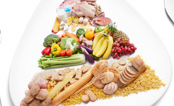

Te sientes hinchada. Con debilidad general. Culposa después de haberte atiborrado de comida. Verano en la playa. Boda. Hay muchas razones para hacer una dieta de desintoxicación. Una dieta así te puede ayudar a volver al camino sano, y posiblemente, a perder una o dos libras (0,5 kg a 1 kg).

De los 9 dias
La dieta de los nueve días de pollo, arroz y manzana es un plan de pérdida de peso rápida, o dieta de moda. Esta dieta te limita a sólo las tres comidas mencionadas en el nombre. La dieta a base de pollo, arroz y manzana no es nutricionalmente equilibrada. Esta no incluye los productos lácteos ni los carbohidratos después de los primeros tres días.
Hiperproteica
Las dietas bajas en carbohidratos, que no mantienen un control de calorías y que a menudo contienen grandes cantidades de grasa tienen como principio restringir drásticamente los carbohidratos, por lo que el cuerpo entra en un estado de metabólico diferente llamado cetosis, por el que se quema su propia grasa como combustible.